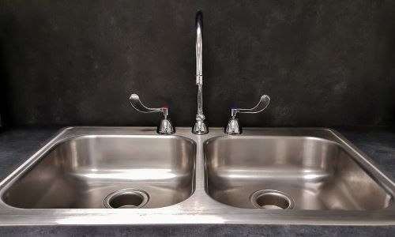
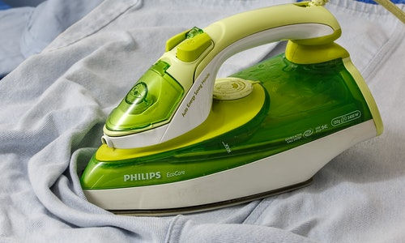

1. Your pots seen better days? Got some marks that won't budge? Try some baking soda with a litlle warm water(plus a little elbow grese!) and give them a good scrub!
1. Your pots seen better days? Got some marks that won't budge? Try some baking soda with a litlle warm water(plus a little elbow grese!) and give them a good scrub!
2. Ran out of floor cleaner? Or looking for a natural cleaner that's a litlle nicer to the earth? Try 8 parts warm water, 1 part lemon juice, 1 part vinegar and then grate in some soap for that fresh , clean smell.
3. Combine two cups of baking soda with 1/8th cup of cream of tartar (approximately two tablespoons) and a half cup of salt. Mix the solution in a jar by giving it a good shake. Pour two cups of boiling water down the drain and add your homemade mix. Let everything sit for at least an hour. The salt and baking soda will work on the clog, while the cream of tartar cleans metals.
4. Believe it or not, salt and newspaper can also get the job done. Flip your iron to the hottest setting and lay out a newspaper on your ironing board. Sprinkle a good amount of salt over the newspaper, and iron the salty newspaper in circles until it's clean. If you don't have a newspaper handy, you can use a brown paper bag—it works just as well.